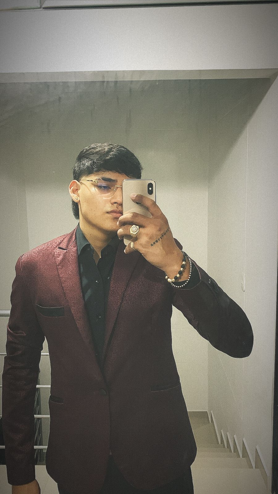

Bienvenido a mi página
Soy estudiante de Ingeniería en Sistemas en la Universidad de Santander. Me apasiona el desarrollo de software, la tecnología y aprender constantemente sobre nuevas herramientas digitales. Disfruto crear soluciones tecnológicas que puedan mejorar procesos y ayudar a las personas.